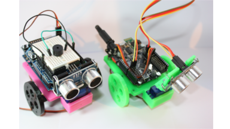
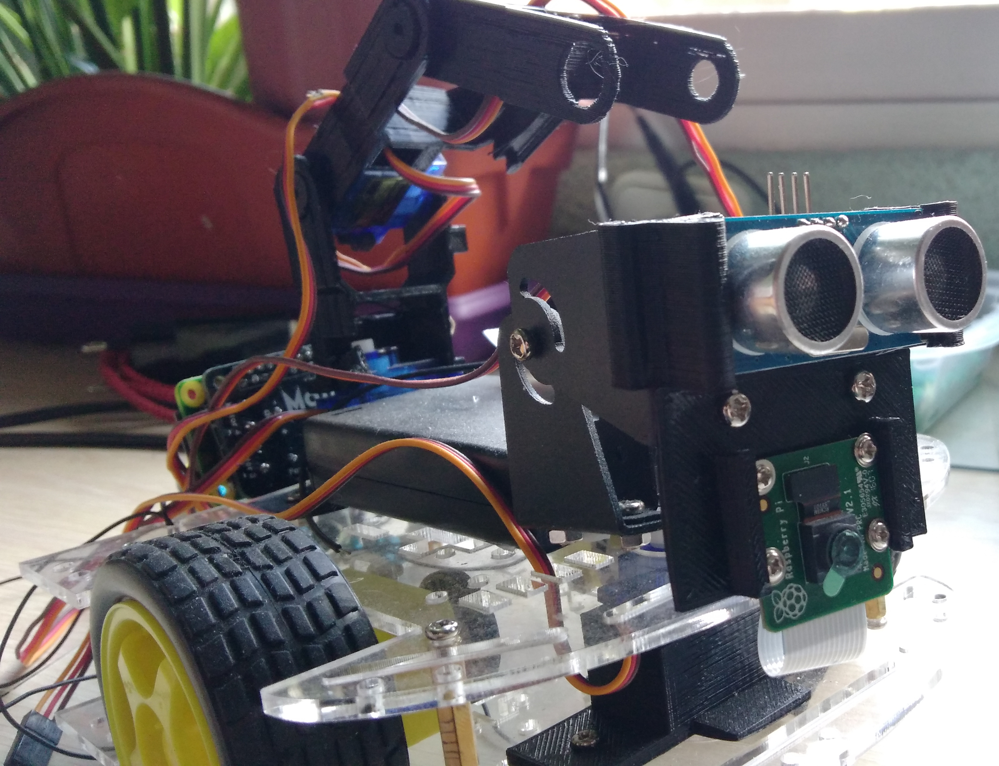
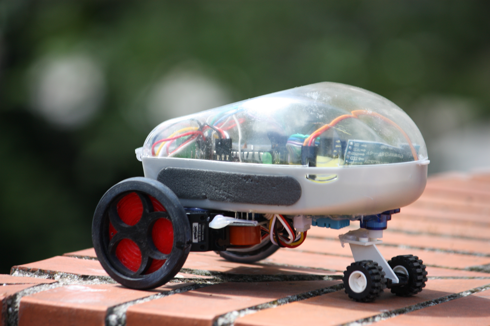
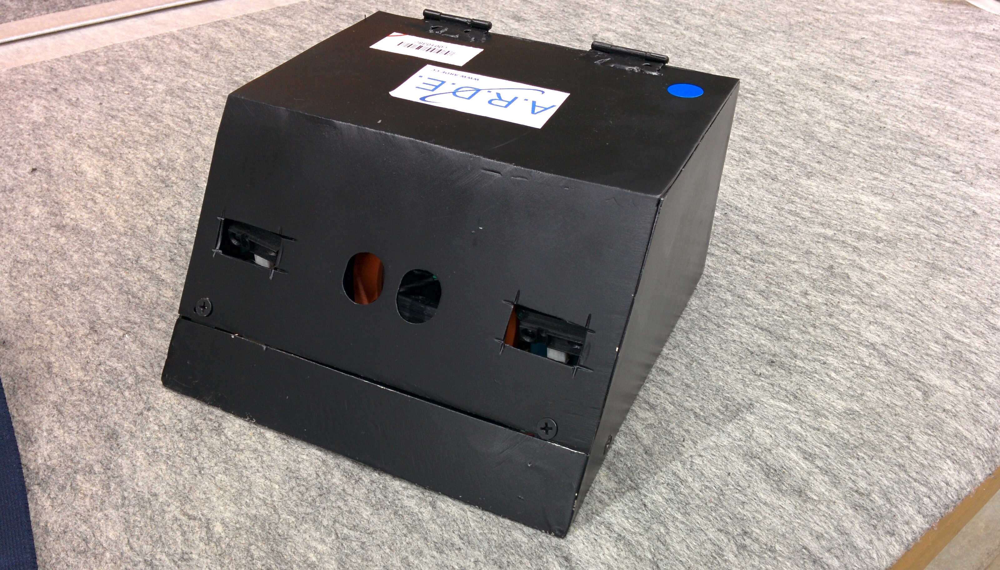

<div id="ajax-page" class="ajax-page-content">
    <div class="ajax-page-wrapper">
        <div class="ajax-page-nav">
            <div class="nav-item ajax-page-prev-next">
                <a class="ajax-page-load" href="portfolio-1.html"><i class="lnr lnr-chevron-left"></i></a>
                <a class="ajax-page-load" href="portfolio-3.html"><i class="lnr lnr-chevron-right"></i></a>
            </div>
            <div class="nav-item ajax-page-close-button">
                <a id="ajax-page-close-button" href="#"><i class="lnr lnr-cross"></i></a>
            </div>
        </div>

        <div class="ajax-page-title">
            <h1>Robótica</h1>
        </div>

        <div class="row">
            <div class="col-sm-8 col-md-8 portfolio-block">
                <div class="owl-carousel portfolio-page-carousel">
                    <div class="item">
                        
                    </div>
                    <div class="item">
                        
                    </div>
                    <div class="item">
                        
                    </div>
                    <div class="item">
                        
                    </div>
                </div>

                <div class="portfolio-page-video embed-responsive embed-responsive-16by9">
                  <iframe class="embed-responsive-item" src="https://www.youtube.com/embed/XC1qeyeSBv4"></iframe>
                </div>

                <script type="text/javascript">
                    jQuery(document).ready(function($){
                        $('.portfolio-page-carousel').imagesLoaded(function(){
                            $('.portfolio-page-carousel').owlCarousel({
                                smartSpeed:1200,
                                items: 1,
                                loop: true,
                                dots: true,
                                nav: true,
                                navText: false,
                                margin: 10,
                                autoHeight:true
                            });
                        });
                    });
                </script>
            </div>

            <div class="col-sm-4 col-md-4 portfolio-block">
                <!-- Project Description -->
                <div class="project-description">
                    <div class="block-title">
                        <h3>Descripción</h3>
                    </div>
                    <ul class="project-general-info">
                        <li><p><i class="fa fa-globe"></i> <a href="https://trastejant.com" target="_blank">web</a></p></li>                        
                    </ul>

                    <p class="text-justify">Mi hobby desde siempre han sido los robots, con el paso de tiempo he tenido la suerte de poder diseñar y construir varias creaciones. Aquí hay una pequeña muestra de ellos.</p>

                    <!--repositorios-->

                    <ul class="project-general-info">                        
                        <li>
                            <p style="font-size: 1.3rem; color: #04B4E0;">TrasBot</p>            
                            
                            <p style="font-size: 0.8rem;"><i class="fas fa-info-circle"></i> Robot creado para impartir clases de robotica y diseño e impresión 3D. Facilmente modificable cuenta con sensores y actuadores que sirven de base para el aprendizaje.</p>
                            <p><i class="fab fa-github"></i> <a href="https://github.com/trastejantEdu/TrasBot" target="_blank">TrasBot</a></p>
                        </li>
                        <hr class="multiProyect" />
                        <li>
                            <p>
                                <p style="font-size: 1.3rem; color: #04B4E0;">MiLo</p>
                                <p style="font-size: 0.8rem;"><i class="fas fa-info-circle"></i> Robot creado para competir en el reto Ferrovial 2017. Debía ser capaz de moverse por una zona en obras, siempre cambiante. Para ello integra diversos sensores y visión artificial. </p>
                                <!--<i class="fab fa-github"></i> <a href="https://github.com/NaMiTech/Scape-room/" target="_blank">MiLo</a>-->
                            </p>
                        </li>
                        <hr class="multiProyect" />
                        <li>
                            <p>
                                <p style="font-size: 1.3rem; color: #04B4E0;">LiqueBot</p>
                                <p style="font-size: 0.8rem;"><i class="fas fa-info-circle"></i> Robot diseñado para tomar mediciones de la calidad del aire y compartirlas en tiempo real. </p>
                                <i class="fab fa-github"></i> <a href="https://github.com/trastejantEdu/LiqueBot" target="_blank">Liquebot</a>
                            </p>
                        </li>
                        <hr class="multiProyect" />
                        <li>
                            <p>
                                <p style="font-size: 1.3rem; color: #04B4E0;">Sumo L2D2 </p>
                                <p style="font-size: 0.8rem;"><i class="fas fa-info-circle"></i> Este robot compitió en japón, en la competición internacional All Japan Sumo Tournament de 2015. </p>
                                <!--<i class="fab fa-github"></i> <a href="https://github.com/NaMiTech/Scape-room/" target="_blank">L2D2 (Sumo)</a>-->
                            </p>
                        </li>
                        <hr class="multiProyect" />
                        <li>
                            <p>
                                <p style="font-size: 1.3rem; color: #04B4E0;">Invernadero 2.0</p>
                                <p style="font-size: 0.8rem;"><i class="fas fa-info-circle"></i> Pequeño Invernadero domotizado. Controla parametros de crecimiento como la humedad, temperatura, luminosidad y riego </p>
                                <i class="fab fa-github"></i> <a href="https://github.com/Trastejant/invernadero20" target="_blank">Invernadero 2.0</a>
                            </p>
                        </li>
                        <hr class="multiProyect" />
                        <li>
                            <p>
                                <p style="font-size: 1.3rem; color: #04B4E0;">Patree</p>
                                <p style="font-size: 0.8rem;"><i class="fas fa-info-circle"></i> Dispositivo que monitoriza aceleración, velocidad e inclinación de un patinete electrico y ajusta la señalización a las condiciones. </p>
                                <i class="fab fa-github"></i> <a href="https://github.com/Trastejant/patree" target="_blank">Patree</a>
                            </p>
                        </li>
                        <hr class="multiProyect" />
                        <li>
                            <p>
                                <p style="font-size: 1.3rem; color: #04B4E0;">SmartPot</p>
                                <p style="font-size: 0.8rem; margin-left: 10px; margin-top: 5px;"><i class="fas fa-info-circle"></i> Maceta inteligente que monitoriza temperatura y humedad ambiental, iluminación y humedad de la tierra y muestra las necesidades de la planta con un simpático muñeco. </p>
                                <i class="fab fa-github"></i> <a href="https://github.com/trastejant/SmartPot" target="_blank">SmartPot</a>
                            </p>
                        </li>
                        
                    </ul>
                    <!-- /Project Description -->

                    <!-- Technology -->
                    <div class="tags-block">
                        <div class="block-title">
                            <h3>Technology</h3>
                        </div>
                        <ul class="tags">
                            <li><a>C</a></li>
                            <li><a>Kicad</a></li>
                            <li><a>FreeCad</a></li>
                            <li><a>Arduino</a></li>                            
                            <li><a>ESP8266</a></li>                            
                            <li><a>ESP32</a></li>                            
                        </ul>
                    </div>
                    <!-- /Technology -->


                    <!-- Share Buttons -->
                    <div class="btn-group share-buttons">
                        <div class="block-title">
                            <h3>Share</h3>
                        </div>
                        <a href="#" target="_blank" class="btn"><i class="fab fa-facebook-f"></i> </a>
                        <a href="#" target="_blank" class="btn"><i class="fab fa-twitter"></i> </a>
                        <a href="#" target="_blank" class="btn"><i class="fab fa-dribbble"></i> </a>
                    </div>
                    <!-- /Share Buttons -->
                </div>
                <!-- Project Description -->
            </div>
        </div>
    </div>
</div>
